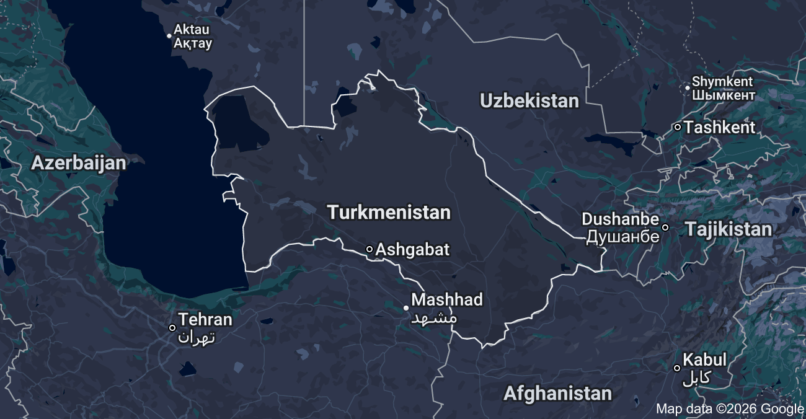

is a country in Central Asia bordered by the Caspian Sea and largely
covered by the Karakum Desert. It’s known for archaeological ruins
including those at Nisa and Merv, major stops along the ancient trade
route the Silk Road.

Languages
Turkmen / Russian / Uzbek
Leisure Activities
The "Gates of Hell" Camping near the Darvaza Gas Crater in the Karakum
Desert to witness the fiery pit that has been burning continuously
since 1971.
Famous Delicacies
Plov (Palaw): The "king" of the table, consisting of rice, mutton,
carrots, and onions cooked together in a large cauldron (kazan).